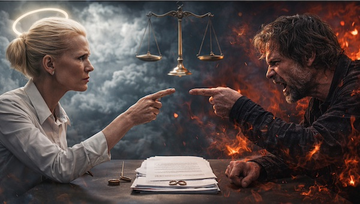

The War in Heaven: Divorce Terms Almost Agreed
The divorce between Jo Over and Bill Z Bubb has torn the west apart for two thousand years. With its end in sight, we look back over the damage it's caused and ask whether the scars will ever heal…

After two millennia of acrimony, counter-accusations, and enough collateral damage to fill the history of Western civilisation, the divorce proceedings between Jo Over and Bill Z. Bubb are about to reach their climax, and the long awaited Revelations are almost at hand.
Though solicitors on both sides will claim that their client is blameless, the rest of the world can see that their house is on fire: the children are at each other's throats, civil society is collapsing, and the planet - which has previously remained remarkably disinterested in human behaviour - is beginning to turn on its troublesome tenants. In fact, for both sides, this is more a case of act now or the family may not be around much longer.
For those who need a reminder, and given the length of this particular legal battle, you'd be forgiven for having lost track: Jo and Bill separated during the aptly named “War in Heaven” at some point around the first century AD. Though circumstances that remain disputed by both parties, the split has caused a rift in western culture that is now, finally, bringing about the apocalyptic damage that has long been promised.
The Arguments
The central question before the court is, as it has always been when Gods or parents fight: who gets to control the children.
Jo Over’s team continue to argue that structure and order will see humanity through. They claim that now, more than ever, the world needs a clear hierarchy, and have presented a "compelling case for some temproary measures that will ensure compliance during this difficult time.” They claim to hold a two-thousand-year track record of progress, productivity and growth.
Bill’s team have argued that she has done nothing more than weaponise guilt as a tool to ensure that the meek and destitute remain in their place, while completely ignoring the needs of the children themselves. “You cannot create a set of rules that simply say ‘no, no, no.' Giving someone a list of things they shouldn't do, does not constitute guidance,” said a representative of Bill. “Her rules are no longer able to deal with the new realities we are facing.”
At the same time, Jo’s team have attacked Bill for what they call his wanton disrespect for order. “Bill Z. Bubb is, and will always remain, a symbol of hedonism, carelessness and reckless abandon. The, so called, War in Heaven was nothing more than an attempted coup, driven by egoism and bitterness. Since then he has been nothing more than an absence - at best.”
Bill’s team, however, argue that he represents the best of their real human natures. They argue that before Jo got her hands on the narrative - before guilt became currency and obedience a virtue - humans were chaotic, creative, contradictory creatures who felt everything fully and apologised for none of it.
They argue that Bill simply didn’t want people to pretend they were better than they were. He wanted his children to accept themselves and be at one with their existences. He’d never demanded worship, had never asked for anything, and wanted nothing more than his children’s happiness. “I’d rather they were comfortable with themselves," he was recently quoted as saying. "No amount of technological progress is worth the kinds of misery that their enduring.”
The Settlement
Though thousands of years of debate cannot be settled in a heartbeat, both parties seem to be focused on the battle for the soul of Phil Davidson. The rock musician and social influencer has risen to power in recent months and, as a result, he has become the final pawn in the age-old battle.
Though it was Bill who made the initial approach, turning him into a musical genius and helping him build a huge following, Jo is not willing to let this one slide. "Bill has tried this before," a representative for Heaven said recently. "So we know the game, and are well prepared."
And so it is down to Davidson and his motly band of musicians to try to find some peace between these warring Gods and bring hope to the people of his world...